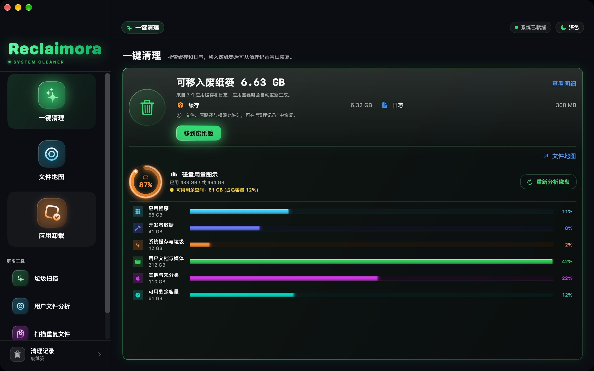

清理与恢复
了解文件去了哪里、为什么空间没有立刻增加，以及如何尝试恢复。
查看恢复说明 →RECLAIMORA / SUPPORT
Reclaimora 是一款原生 Mac 存储分析与清理工具。在这里了解目录授权、文件清理和恢复，找到问题的下一步。

不需要下载日志，也不需要上传私人文件。
了解文件去了哪里、为什么空间没有立刻增加，以及如何尝试恢复。
查看恢复说明 →检查目录授权和扫描范围。了解商店版能够处理哪些文件。
排查扫描问题 →提供版本和复现步骤，帮助我们定位问题。请先隐藏个人信息。
前往 GitHub 反馈 ↗